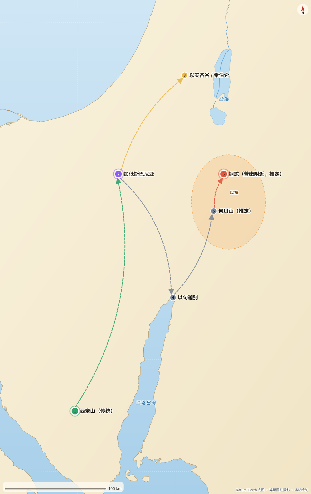
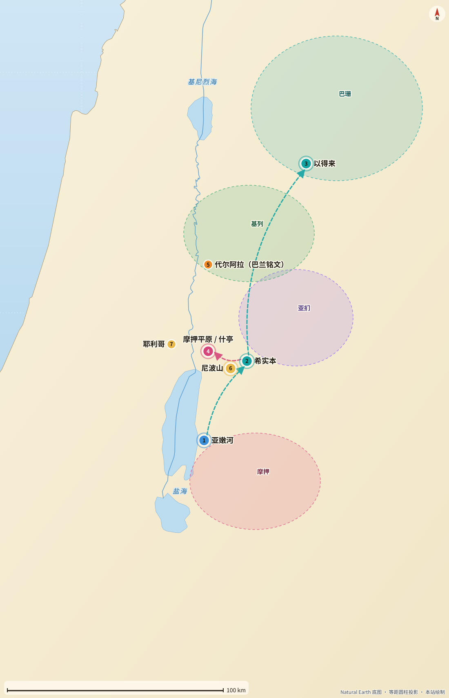

民数记 Numbers · בְּמִדְבַּר
一句话：出埃及的一代因不信倒毙旷野，但信实的神保守、管教并带领新的一代来到应许之地的门口。两次数点（1 与 26），两代人；中间是 38 年的漂流。
笔记标记图例
- 核心教义 红底 · 红实线
- 钥节金句 金底 · 金实线
- 历史背景 蓝底 · 蓝实线
- 基督 / 圣约 紫底 · 紫实线
- 生活应用 绿底 · 绿实线
- 难点疑义 玫红底 · 虚线
- 波浪线 特别提醒 / 易混点
📌一、总纲
💎1.1核心一把抓
⭐1.2钥节与一句话
『愿耶和华赐福给你，保护你。愿耶和华使他的脸光照你，赐恩给你。愿耶和华向你仰脸，赐你平安。』— 民6:24-26（和合本）
耶和华对摩西说：「这百姓藐视我要到几时呢？我在他们中间行了这一切神迹，他们还不信我要到几时呢？— 民14:11（和合本）
耶和华对摩西说：「你制造一条火蛇，挂在杆子上；凡被咬的，一望这蛇，就必得活。」摩西便制造一条铜蛇，挂在杆子上；凡被蛇咬的，一望这铜蛇就活了。— 民21:8-9（和合本）
神非人，必不致说谎，也非人子，必不致后悔。他说话岂不照着行呢？他发言岂不要成就呢？— 民23:19（和合本）
我看他却不在现时；我望他却不在近日。有星要出于雅各，有杖要兴于以色列，必打破摩押的四角，毁坏扰乱之子。— 民24:17（和合本）
🏺1.3背景
- 作者
- 摩西（民33:2「摩西遵着耶和华的吩咐记载他们所行的路程」）。
- 时间
- 出埃及后第二年二月初一（1:1，约前1445）到第四十年十一月之前（约前1406）。
- 地点
- 西奈旷野 → 巴兰旷野 → 加低斯 → 以东、摩押边界 → 外约旦（希实本、巴珊）→ 摩押平原。
- 书名
- 希伯来文「在旷野」（1:1）；希腊/拉丁书名「数目」，因两次人口普查。
| 普查 | 经文 | 二十岁以上男丁 | 说明 |
|---|---|---|---|
| 第一次（老一代） | 1:46 | 603,550 | 西奈，第二年 |
| 第二次（新一代） | 26:51 | 601,730 | 摩押平原；除迦勒、约书亚外老一代都已死（26:64–65） |
- 代尔阿拉（Deir ‘Alla）铭文（约前8世纪，约旦谷，1967年发现）：灰泥墙上的亚兰文字提到「巴兰，比珥的儿子，是一位见异象的」——圣经之外对巴兰的记载。
- 克特夫·欣嫩（Ketef Hinnom）银卷（约前7–6世纪，耶路撒冷，1979年发现）：刻有民6:24–26 祭司祝福的文字，是目前已知最古老的圣经经文抄件。
- 米沙石碑（约前840年，摩押王米沙）：提到摩押神基抹（参民21:29）、以色列王暗利，以及「耶和华」之名。
- 外约旦的「王道」（King’s Highway，20:17）是连接亚喀巴湾与大马士革的古商路。
🧾1.4大纲与因果
| 段落 | 经文 | 内容 | 关键 |
|---|---|---|---|
| 一、在西奈预备 | 1:1–10:10 | 数点、安营、利未人、拿细耳人、祭司祝福、逾越节、云柱、银号 | 神是营的中心（2章 会幕在中间） |
| 二、启程与怨言 | 10:11–12 | 发怨言、鹌鹑、七十长老、米利暗与亚伦 | 「耶和华的膀臂岂是缩短了吗？」（11:23） |
| 三、加低斯的悖逆 | 13–14 | 十二探子；十个恶信、两个好信 | 老一代被判在旷野四十年 |
| 四、旷野漂流 | 15–19 | 可拉党叛乱、亚伦的杖发芽、红母牛 | 祭司职分的确立 |
| 五、新一代启程 | 20–21 | 米利暗死、米利巴之水、亚伦死、铜蛇、战胜西宏与噩 | 击打磐石；仰望得活 |
| 六、巴兰 | 22–24 | 巴勒雇巴兰咒诅以色列，四次祝福 | 神所祝福的无人能咒诅 |
| 七、巴力毗珥 | 25 | 以色列与摩押女子行淫拜巴力 | 非尼哈的热心；平安之约 |
| 八、新一代的预备 | 26–36 | 第二次数点、西罗非哈的女儿、约书亚、节期献祭、许愿、米甸之战、二个半支派、路程、地界、逃城 | 为进迦南作准备 |
🧵二、叙事与时间
🧵2.1故事线：五个转折
① 秩序井然的营（1–10）
十二支派按东西南北四面安营，会幕与利未人在中间（2–3章）——神住在民中，一切围绕祂。民6:24–26 的祝福把神的名「加在」百姓身上（6:27）。
② 加低斯的悖逆（13–14）
探子回报：「那地果然是流奶与蜜之地」（13:27），但「那地的居民强壮」。十人说「我们不能上去」，迦勒与约书亚说「耶和华若喜悦我们，就必将我们领进那地」（14:8）。百姓要另立首领回埃及。神宣判：按窥探的四十日，一日顶一年，在旷野四十年。
这些人虽看见我的荣耀和我在埃及与旷野所行的神迹，仍然试探我这十次，不听从我的话，他们断不得看见我向他们的祖宗所起誓应许之地。凡藐视我的，一个也不得看见；惟独我的仆人迦勒，因他另有一个心志，专一跟从我，我就把他领进他所去过的那地；他的后裔也必得那地为业。— 民14:22-24（和合本）
③ 可拉与发芽的杖（16–17）
可拉、大坍、亚比兰质疑摩西与亚伦的权柄：「全会众个个既是圣洁……你们为甚么自高……？」（16:3）地开了口吞灭他们。亚伦的杖「发了芽，生了花苞，开了花，结了熟杏」（17:8）——神亲自印证所拣选的祭司。
④ 米利巴与铜蛇（20–21）
神吩咐摩西「吩咐磐石发出水来」，摩西却说「你们这些背叛的人听我说」并击打磐石两下（20:10–11）。神说：「你们不信我，不在以色列人眼前尊我为圣」（20:12）。之后百姓又发怨言，火蛇咬人，神吩咐造铜蛇挂在杆子上，「凡被蛇咬的，一望这铜蛇就活了」（21:9）。
⑤ 巴兰与巴力毗珥（22–25）
摩押王巴勒雇用先知巴兰咒诅以色列。驴子开口，神叫巴兰只说祂所赐的话。四次神谕全是祝福，最后预言「有星要出于雅各，有杖要兴于以色列」（24:17）。然而巴兰后来出主意以淫乱与拜偶像引诱以色列（31:16；启2:14）——外面咒诅不成，就从里面败坏。
⏳2.2时间线
🗺️三、地理与文化
🗺️3.1地图与历史：加低斯 · 漂流 · 外约旦
旷野与加低斯

真实地理底图：Natural Earth（公有领域）海岸线、河流、湖泊，本站本地绘制，无第三方地图服务。绿线＝离开西奈到加低斯；金线＝探子；灰线＝漂流与绕行。古代地点多为学界通行推定，标“推定/有争议”处尚无定论。
- 1西奈山（传统） Jebel Musa · 民10
第二年二月二十日离开。 - 2加低斯巴尼亚 Kadesh-barnea · 民13–14；20
不信的枢纽；米利暗死于此。 - 3以实各谷 / 希伯仑 Eshcol / Hebron · 民13:22–24
探子砍葡萄的地方。 - 4以旬迦别 Ezion-geber · 民33:35
亚喀巴湾北端的一站。 - 5何珥山（推定） Mount Hor (?) · 民20
亚伦去世处。 - 6铜蛇（普嫩附近，推定） Punon (?) · 民21:4–9
火蛇与铜蛇。
- 加低斯是南地绿洲，十二探子从这里出发（民13）。
- 不信使从何烈到加低斯那十一天的路程（申1:2）变成三十八年漂流。
- 民33 提供站名清单，是历史行程的骨架，具体定点仍多有推定。
外约旦征服与摩押平原

真实地理底图：Natural Earth（公有领域）海岸线、河流、湖泊，本站本地绘制，无第三方地图服务。青线＝击败西宏与噩；粉线＝下到摩押平原安营。古代地点多为学界通行推定，标“推定/有争议”处尚无定论。
- 1亚嫩河 Arnon · 民21:13
摩押与亚摩利人的界河。 - 2希实本 Heshbon · 民21:21–31
亚摩利王西宏的京城。 - 3以得来 Edrei · 民21:33–35
巴珊王噩被击败。 - 4摩押平原 / 什亭 Shittim · 民22–36
巴兰、巴力毗珥、第二次核点。 - 5代尔阿拉（巴兰铭文） Deir Alla · 约前8世纪
出土「比珥的儿子巴兰」铭文。 - 6尼波山 Mount Nebo · 申34
摩西观望应许之地。 - 7耶利哥 Jericho · 民22:1
河对岸的门户。
- 亚嫩河是摩押与亚摩利的界河。
- 击败西宏（希实本）与噩（巴珊）后，河东成为两支派半的产业。
- 代尔阿拉铭文提到「比珥的儿子巴兰」，是圣经以外的旁证。
会幕安营（民2）
🌍3.2古代近东文化
| 主题 | 近东 | 民数记 |
|---|---|---|
| 人口普查 | 马里（Mari）文献记载为征兵、征税而作的普查，有时伴随洁净礼 | 以色列的普查为了「出去打仗」（1:3），并伴随赎价（出30:12） |
| 雇先知咒诅敌人 | 近东君王常请占卜者、咒诅者（如亚述的 bārû 祭司）在战前作法 | 巴兰只能说神所赐的话——神的主权胜过法术（23:23「断没有法术可以害雅各」） |
| 基抹 | 摩押国神（米沙石碑） | 「基抹的民哪，你们灭亡了」（21:29） |
| 巴力毗珥 | 迦南/摩押的生殖崇拜，常有宗教性淫乱 | 以色列在应许之地门口犯罪；24,000 人死于瘟疫（25:9；参林前10:8） |
| 铜蛇 | 近东与埃及有蛇的护身符与医疗象征 | 铜蛇不是护身符，而是神命定的信心标记；后来被拜成偶像，希西家打碎它，称之为「铜块」（王下18:4） |
✝️四、神学
✝️4.1圣经神学：民数记如何指向基督
🤝4.2圣约神学：圣约群体中的警告与保守
民数记让我们看见：在可见的圣约群体中，有人领受同样的恩典记号（过红海、吃吗哪），却因不信而灭亡。新约两次以此警告教会（林前10:1–12；来3:7–4:13）。改革宗的回答是：警告是神保守选民的方法之一，而神的保守是确实的。
他们遭遇这些事都要作为鉴戒，并且写在经上，正是警戒我们这末世的人。— 林前10:11（和合本）
因着残留在人里面的罪，以及来自世界和撒但的引诱，那些悔改归信的人如果靠自己的力量，就不能在恩典中站立1。但是，神是信实的，他一旦赐恩典给属他的人，就仁慈地在恩典中坚固他们，并以大能保守他们一直在这恩典中，直到世界末了2。
完全失去信心与恩典，深陷罪中，直到最后失丧的情况不会发生在属神的人身上。这不是靠信徒自己的功德或力量，而是藉着人所不配得的神的恩典。这种情况对信徒而言不但很容易发生，而且一定会发生，但对神而言则不可能发生，因为他的定旨不会改变1，他的应许不会落空，按其旨意发出的呼召不会撤回2，基督的功德、代求与保守不会无效3，圣灵的印记既不会作废，也不会被抹去4。
📜4.3信条对照（CCI 原文逐字）
根据他不变的拣选定旨1，即使那些属他的人犯了可怕的罪，有丰富怜悯的神也不将他的灵从他们那里完全撤回2；他也不允许他们深陷罪中，以致失去神儿子的名分和得称为义的地位3，也不允许他们犯罪，以至于死4，更不允许他们犯下亵渎圣灵的罪以致完全遭他弃绝，自取永远的灭亡5。
神的护理这一教义给了我们不可言喻的安慰，因为我们从此教义中得知，任何事临到我们皆非出于偶然，都有我们仁慈天父的管理在其中。他以慈父的爱关怀、看顾我们，以他的权能保守一切受造之物。若不是天父的旨意，没有一根头发会掉下来——因我们的头发都被数过，也没有一只麻雀会落在地上（太10:29-30）。我们相信这一切，因为我们知道，他掌管魔鬼和我们一切的仇敌，若没有他的许可，若不是出于他的意愿7，他们就不能够伤到我们。
🌱五、研习与记忆
🧩5.1难点解析
🧩 摩西的罪为什么严重到不能进迦南？
神亲自解释：「不信我，不在以色列人眼前尊我为圣」（20:12）。① 不照神的话（吩咐 vs 击打）；② 以怒气把神的恩典表现为神的愤怒；③ 「我们」（20:10）把荣耀归给自己。领袖受更重的审判（雅3:1）。但神仍许他看见那地（申34），而且他在登山变像时与基督同站在应许之地（太17:3）。
🧩 巴兰是真先知还是假先知？
他确实领受了神的话（神可以借不信的人说话，如该亚法，约11:51），但心贪不义之财（彼后2:15；犹11），并引诱以色列犯罪（31:16）。他最终死于米甸人中（31:8）。
🧩 数字太大了吗？
见出埃及记难点。补充：民3:43 头生男子 22,273 人对比 603,550 男丁，比例不寻常，一些学者因此提出其他解读；保守立场既尊重字面，也承认当中仍有待研究之处。
🧩 米甸之战（31）与「圣战」
这是神对引诱以色列拜偶像之罪的特定审判（25:16–18；31:2–3），由神亲自命令，属于以色列神权国度在救赎历史中独特的时期。新约教会的争战「不是属血气的」（林后10:3–5；弗6:12）。
🔍5.2多角度阅读
| 角度 | 看见什么 |
|---|---|
| 结构 | 以两次数点为两代分界；以「路程」（33）总结四十年。 |
| 神学 | 神的圣洁（营的布局）、公义（审判）、信实（新一代）。 |
| 教会论 | 旷野中的教会（徒7:38「旷野会中」）：有记号、有领袖、有试炼。 |
| 心理与灵性 | 发怨言的根源是不信与怀念埃及（11:5「我们记得在埃及的时候不花钱就吃鱼」）。 |
| 领导 | 摩西的谦和（12:3）与软弱；约书亚的接续（27:18–23）。 |
🌱5.3应用
🧠5.4记忆卡与测验
❓ 民数记希伯来书名意思是？
❓ 摩西被禁止进迦南是因为？
❓ 哪个考古发现刻有祭司的祝福？
❓ 林前10:11 说这些事是？
❓ 多特信经第五项第3条的主题？
🎬5.5动画导览（点击后播放）
点击封面后才加载播放器，不自动播放。视频为圣经工程（BibleProject）官方普通话概述，作结构导览；本站神学立场以欧陆改革宗三项联合信条为准。